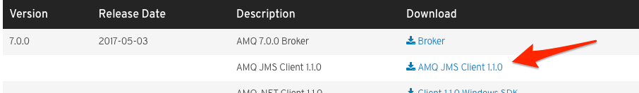
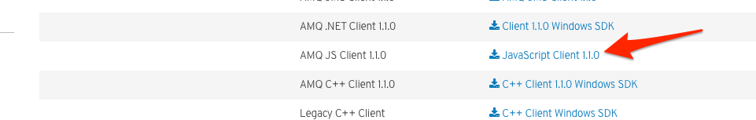

AMQ 7 Clients
AMQ 7 comes with several new clients covering a variety of protocols and programming languages. In the past, any supported clients were only released when we released new versions of the AMQ product. With AMQ7 that has changed; each client has its own lifecycle and is released independently from the AMQ broker/server components.
AMQ7 includes the following supported clients:
- AMQ JMS Client (official docs)
- AMQ C++ Client (official docs)
- AMQ JavaScript/NodeJS Client (official docs)
- AMQ Python Client (official docs)
- AMQ .NET Client (official docs)
Let's explore the clients.
AMQ JMS Client
To use the AMQ JMS client, navigate to https://developers.redhat.com/products/amq/download/ and locate the AMQ JMS Client.

When you've downloaded the file, copy it to a location where you'd like to unzip this client.
$ mv ~/Downloads/apache-qpid-jms-0.21.0.redhat-1-bin.zip ./clients/
$ cd clients
$ unzip apache-qpid-jms-0.21.0.redhat-1-bin.zip
$ cd apache-qpid-jms-0.21.0.redhat-1
Now we'll explore the client. In the distribution we just unzipped, there's an examples folder. Navigate into it and you'll find a Java Maven project. Let's build the project:
$ cd examples
$ mvn install
If successful, you should see output like this:
[INFO]
[INFO] --- maven-install-plugin:2.5.2:install (default-install) @ qpid-jms-examples ---
[INFO] Skipping artifact installation
[INFO] ------------------------------------------------------------------------
[INFO] BUILD SUCCESS
[INFO] ------------------------------------------------------------------------
[INFO] Total time: 4.063 s
[INFO] Finished at: 2017-05-11T15:52:15-07:00
[INFO] Final Memory: 28M/456M
[INFO] ------------------------------------------------------------------------
Feel free to open this project in your favorite IDE (like JBoss Developer Studio).
A couple of things to notice about this example:
- Our JMS ConnectionFactory and destination names are configured in the
src/main/resources/jndi.propertiesfile - Our
org.apache.qpid.jms.example.HelloWorldmain() class bootstraps theMessageConsumerandMessageProducerused in this example - We lookup the JMS connection information from JNDI as specified in our
jndi.propertiesfile - We send one message and receive one message.
Review the code closer to get an idea of what it's doing:
public static void main(String[] args) throws Exception {
try {
// The configuration for the Qpid InitialContextFactory has been supplied in
// a jndi.properties file in the classpath, which results in it being picked
// up automatically by the InitialContext constructor.
Context context = new InitialContext();
ConnectionFactory factory = (ConnectionFactory) context.lookup("myFactoryLookup");
Destination queue = (Destination) context.lookup("myQueueLookup");
Connection connection = factory.createConnection(System.getProperty("USER"), System.getProperty("PASSWORD"));
connection.setExceptionListener(new MyExceptionListener());
connection.start();
Session session = connection.createSession(false, Session.AUTO_ACKNOWLEDGE);
MessageProducer messageProducer = session.createProducer(queue);
MessageConsumer messageConsumer = session.createConsumer(queue);
TextMessage message = session.createTextMessage("Hello world!");
messageProducer.send(message, DeliveryMode.NON_PERSISTENT, Message.DEFAULT_PRIORITY, Message.DEFAULT_TIME_TO_LIVE);
TextMessage receivedMessage = (TextMessage) messageConsumer.receive(2000L);
if (receivedMessage != null) {
System.out.println(receivedMessage.getText());
} else {
System.out.println("No message received within the given timeout!");
}
connection.close();
} catch (Exception exp) {
System.out.println("Caught exception, exiting.");
exp.printStackTrace(System.out);
System.exit(1);
}
}
To run this example, we'll first download all of the project's dependencies:
$ mvn clean package dependency:copy-dependencies -DincludeScope=runtime -DskipTests
Next, we need to make sure our broker is running. If you've followed from the previous labs, you have a broker running with a single Acceptor running on port 61616. Let's change our jndi.properties file to reflect this change. (if you're coming to this lab from your own installation/running instance of the AMQ7 broker, adjust the properties as needed; e.g., if you still have the dedicated AMQP Acceptor running, then no need to make this change).
Our jndi.properties file should look like this, with the connectionfactory.myFactoryLookup property set to 61616
NOTE: We need to change the connection factory URL to 61616 since our acceptor does not have the other ports open.
# Set the InitialContextFactory class to use
java.naming.factory.initial = org.apache.qpid.jms.jndi.JmsInitialContextFactory
# Define the required ConnectionFactory instances
# connectionfactory.<JNDI-lookup-name> = <URI>
connectionfactory.myFactoryLookup = amqp://localhost:61616
# Configure the necessary Queue and Topic objects
# queue.<JNDI-lookup-name> = <queue-name>
# topic.<JNDI-lookup-name> = <topic-name>
queue.myQueueLookup = queue
topic.myTopicLookup = topic
Now let's build our project and run:
$ mvn clean install
$ java -cp "target/classes/:target/dependency/*" org.apache.qpid.jms.example.HelloWorld
If everything completed properly, you should see the following output:
Hello world!
Some things to note:
The URL we passed to the connection factory should be in the following form:
amqp[s]://hostname:port[?option=value[&option2=value...]]
We can also use the failover URI (discussed in future lab) like this:
failover:(amqp://host1:port[,amqp://host2:port...])[?option=value[&option2=value...]]
Options for configuration can be found at the AMQ7 JMS Client product documentation
AMQ NodeJS Client
The AMQ NodeJS client can be used to connect to the AMQ7 broker (or any compatible AMQP 1.0 broker) and can send and receive messages regardless of what clients produced them (ie, they could be MQTT IoT producers for example).
To use the AMQ NodeJS client, navigate to https://developers.redhat.com/products/amq/download/ and locate the AMQ NodeJS (called "JavaScript" in the download portal) Client.

When you've downloaded the file, copy it to a location where you'd like to unzip this client.
$ mv ~/Downloads/nodejs-rhea-0.2.0-1.zip . ./clients/
$ cd clients
$ unzip nodejs-rhea-0.2.0-1.zip
$ cd nodejs-rhea-0.2.0-1
To run the examples, we'll need to install two dependencies:
$ npm install debug
$ npm install yargs
Now let's navigate to the examples folder and take a look at the application that will receive messages from the broker:
$ cd node_modules/rhea/examples
Open up the simple_recv.js file in your favorite editor:
var args = require('yargs').options({
'm': { alias: 'messages', default: 100, describe: 'number of messages to expect'},
'n': { alias: 'node', default: 'examples', describe: 'name of node (e.g. queue) from which messages are received'},
'p': { alias: 'port', default: 5672, describe: 'port to connect to'}
}).help('help').argv;
var received = 0;
var expected = args.messages;
container.on('message', function (context) {
if (context.message.id && context.message.id < received) {
// ignore duplicate message
return;
}
if (expected === 0 || received < expected) {
console.log(JSON.stringify(context.message.body))
if (++received === expected) {
context.receiver.detach();
context.connection.close();
}
}
});
container.connect({'port':args.port}).open_receiver(args.node);
We see that this simple receiver application tries to connect to a broker on port 5672 by default (which is also the AMQP default port) and tries to read messages from the examples queue. Since we have our broker running on port 61616, let's run our receiver and direct it to connect to our broker on the correct port:
$ node simple_recv.js -p 61616
Open another window to run our sender. Navigate back to the same directory where the examples where and run:
$ node simple_send.js -p 61616
Note that for the sender, we're also changing its port. Hit enter to run the sender. You should see similar output:
From the receiver:
{"sequence":1}
.
.
.
{"sequence":90}
{"sequence":91}
{"sequence":92}
{"sequence":93}
{"sequence":94}
{"sequence":95}
{"sequence":96}
{"sequence":97}
{"sequence":98}
{"sequence":99}
{"sequence":100}
From the sender:
sent 1
.
.
.
sent 90
sent 91
sent 92
sent 93
sent 94
sent 95
sent 96
sent 97
sent 98
sent 99
sent 100
all messages confirmed
Other clients
You can download the other clients from the Red Hat support portal or the developers.redhat.com site. At the moment all the clients are available for download there EXCEPT the Python and Linux C++ libraries (for RHEL). Those are available as RPMs through your RHEL subscription.